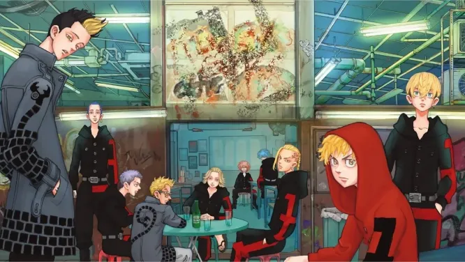

Tokyo Avengers is a manga drawn by Ken Kazui.
Shonen-style manga aimed at teens and will be published in Weekly Shonen
Magazine. It began publication on March 1, 2017, and is still counting, now
including 29 books. An anime series adapted by Liden Films has already
happened.
The symbol in the illustration is a swastika, the Buddhist symbol for prosperity and happiness
Tokyo Revengers tells the story of a 26-year-old supermarket worker named Takemichi Hanagaki. He learns from the news that Hinata, his high school girlfriend, has died in a Tokyo Manjikai gang hit. As he waits for the underground to go to work the next day, someone pushes him onto the tracks, He jumps back in time just before being hit, finding himself 12 years back in the 8th grade. He will do everything to avoid Hinata's death and take the lead of the "Tokyo Manjikai" gang in order to dismantle it.
He then meets up with his group of friends from that time and manages to join the gang. He befriends the leaders of the gang who are called Mikey and Draken. He finds it hard to understand how the gang could have gone wrong when they are led by people he finds good and admires. He then understands that it is the arrival of a mysterious individual in the gang that will make him individual in the gang that will make him go wrong.
The return in time is a shock to Takemichi, who realizes that he was much happier at that time with his girlfriend and his friends, whereas at that time he only dreamed of growing up and being an adult. he only dreamed of growing up and being an adult.
It's a work that I really enjoy because it's very uplifting but it also teaches us to step back from our situation and appreciate the moment rather than focus on the future. the present rather than focusing on the future./p>